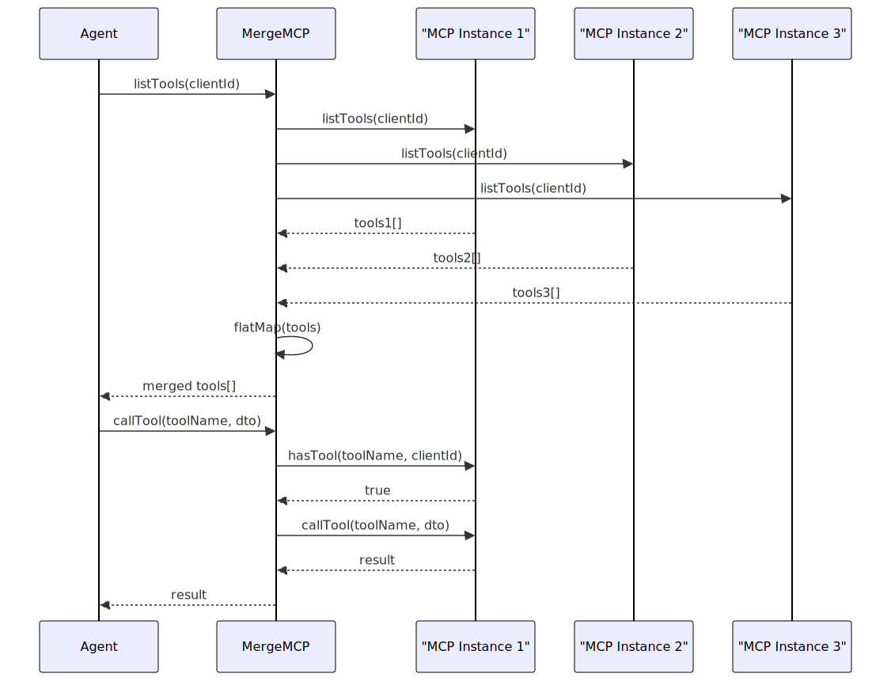
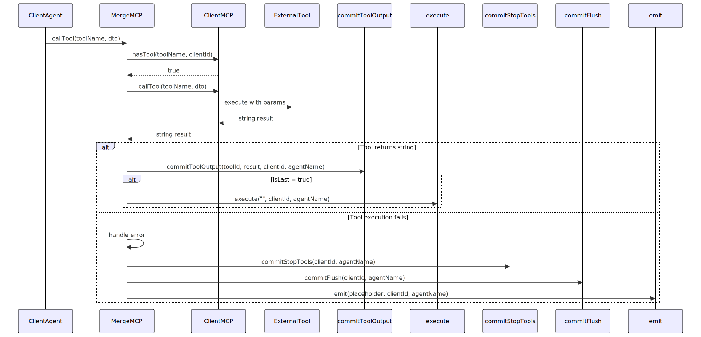

The Model Context Protocol (MCP) provides a standardized interface for managing external tools and services within the agent-swarm-kit. This system enables agents to dynamically discover, validate, and execute tools from external sources, extending their capabilities beyond built-in functionality. MCP serves as a bridge between the agent system and external services, handling tool lifecycle management, caching, and execution coordination.
For information about built-in agent tools and standard tool execution patterns, see Tool and Interface Definitions. For details on completion adapters and AI model integration, see Completion Adapters.
The MCP system is built around the IMCP interface, which defines the contract for tool management operations. All MCP implementations must support tool listing, existence checking, tool calling, and cache management.

The IMCP interface defines four essential operations that all MCP implementations must support:
| Method | Purpose | Returns |
|---|---|---|
listTools(clientId) |
Retrieve available tools for a client | Promise<IMCPTool[]> |
hasTool(toolName, clientId) |
Check if a specific tool exists | Promise<boolean> |
callTool(toolName, dto) |
Execute a tool with parameters | Promise<MCPToolOutput> |
updateToolsForAll() |
Refresh tool cache for all clients | Promise<void> |
updateToolsForClient(clientId) |
Refresh tool cache for specific client | Promise<void> |
The IMCPTool interface represents individual tools with their metadata and input schema:
interface IMCPTool {
name: string;
description?: string;
inputSchema: {
type: "object";
properties?: MCPToolProperties;
required?: string[];
};
}
The NoopMCP class provides a null-object implementation of the MCP interface, primarily used for testing and as a safe fallback when no MCP is configured.

The MergeMCP class combines multiple MCP instances into a single interface, enabling agents to access tools from multiple sources simultaneously. It implements a composition pattern for MCP management.

The ClientMCP class provides the core MCP functionality with caching, callback support, and tool management. It uses memoization to cache tool lists per client and supports lifecycle callbacks.

The MCP service layer follows the three-tier architecture pattern used throughout the agent-swarm-kit, with public services, connection services, and schema services.

The MCP system integrates with the agent execution pipeline through tool validation, execution, and output handling. When an agent receives tool calls from an AI model, the MCP system validates and executes external tools.

The MCPUtils class provides a simplified interface for managing MCP tool updates. It validates MCP names and delegates to the appropriate public service methods.

The MCP system integrates with the broader agent architecture through the dependency injection container and schema services. Agents can access MCP functionality through their configured MCP instances.

The MCP system includes comprehensive error handling for tool execution failures and proper lifecycle management for resource cleanup.
| Error Scenario | Handling Approach | Recovery Action |
|---|---|---|
| Tool execution exception | Catch and log error | Stop tools, flush history, emit placeholder |
| Tool not found | Throw descriptive error | Fail gracefully with error message |
| Cache invalidation | Clear memoized cache | Trigger tool refresh |
| Client disposal | Clean up resources | Clear cache and invoke dispose callback |
The error handling includes callback integration for custom error processing and resurrection strategies:
// Error handling in MergeMCP.callTool
try {
const toolOutput = await mcp.callTool(toolName, dto);
// Process successful result
} catch (error) {
// Log error and trigger callbacks
callbacks.onToolError?.(dto.clientId, dto.agentName, toolName, error);
callbacks.onResurrect?.(dto.clientId, dto.agentName, "tool", `MCP execution failed toolName=${toolName}`);
// Clean up and recover
await commitStopTools(dto.clientId, agentName);
await commitFlush(dto.clientId, agentName);
await emit(createPlaceholder(), dto.clientId, agentName);
}